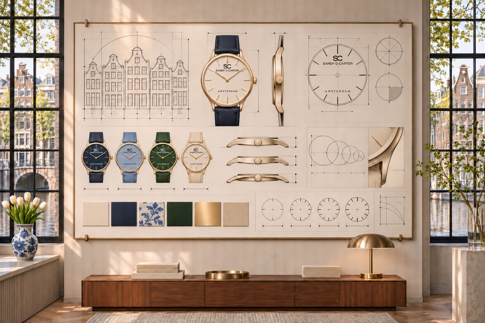

Design that speaks through restraint
Dutch watch design is often recognised by what it chooses to leave out. Decorative noise gives way to clear dials, functional forms and a calm visual rhythm. The goal is not emptiness; it is focus.
SANDY D. CARTER draws on this philosophy through the real designer personalities Sandy and Carter, whose shared watch-design journey began in Amsterdam in 2011. Their perspective explores how proportion and restraint give a watch lasting identity.
Inspiration, stated clearly
SANDY D. CARTER is inspired by Amsterdam and wider European design culture. Inspiration does not imply a product-manufacturing origin. Product-origin and technical information will be stated separately for every approved model.

Frequently asked questions
What is Dutch watch design?
It is a design approach associated with clarity, usefulness, balanced proportion and visual restraint.
Is SANDY D. CARTER a Dutch company?
The brand draws creative inspiration from Amsterdam and wider European design culture; verified product origin will be stated per model.